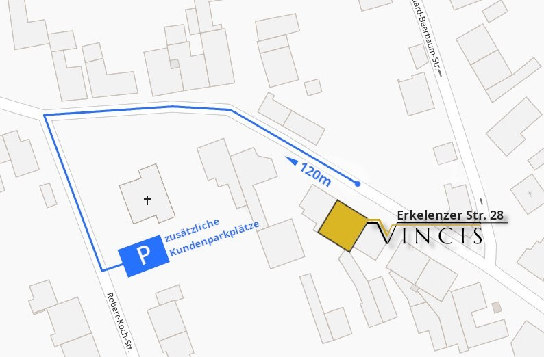

Das Ristorante Vincis ist die ideale Adresse für italienische & mediterrane Küche im stilvollen Ambiente. Mit traditionellen Speisen oder unseren sardischen Spezialitäten, bieten wir Ihnen einen genussvollen Aufenthalt, der zusuammen mit erlesenen Weinen und herzlichem Service abgerundet wird. Genießen Sie bei warmen Temperaturen Ihre Gerichte auch auf unserer mediterran hergerichteten Terasse. Wir freuen uns auf Sie.
Unsere Öffnungszeiten:
Täglich 18:00 – 22:00 Uhr
Sonntags zusätzlich 12:00 – 14:30 Uhr
Dienstag ist Ruhetag
CENARE | SPEISEN
Auf unserer täglich wechselnden Speisekarte bieten wir Ihnen von der Vorspeise bis zum Dessert eine abgestimmte Variation der italienisch-mediterranen Küche an – ergänzt durch saisonale und sardische Akzente.
Wir sind der Überzeugung, dass Kulinarik nicht erst in der Küche beginnt; aus diesem Grund bereiten wir unsere Speisen stets mit ausgesuchten & frischen Zutaten zu.
Falls Sie Wünsche über unsere Tagekarte hinaus haben, gehen wir selbstverständlich, soweit möglich, darauf ein. Fragen Sie uns bitte einfach am Tisch.
VINO | WEIN
Die Liebe zum Wein ist italienische Tradition. Mit unserer individuellen und durchdachten Auswahl an Weinen aus den verschiedensten Regionen Italiens komplementieren wir unsere Speisen und beraten Sie gerne bei der Auswahl.
Selbstverständlich bietet Ihnen unsere Bar alkoholfreie Getränke, Biere und andere Spirituosen an.
RESERVIERUNGEN
+49 (0) 2272 407 58 47
Oder ganz bequem Online:
Reservierungsanfragen für den gleichen Tag sind nach 16 Uhr nur telefonisch möglich.
ANFAHRT & PARKEN:
Erkelenzer Str. 28 - 50181 Bedburg
Neben den bestehenden Parkmöglichkeiten vor dem Lokal, stehen Ihnen zusätzlich, einen kurzen Fußweg entfernt, weitere Parkplätze zur Verfügung.
